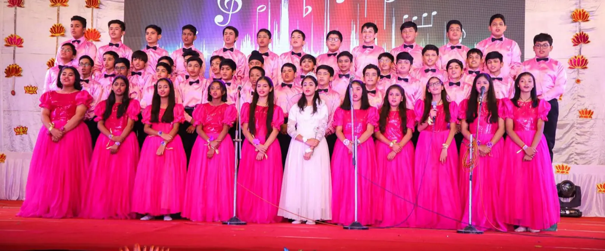
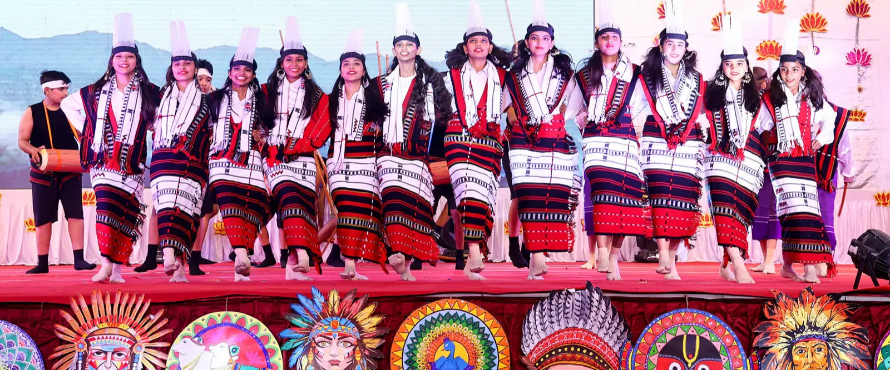
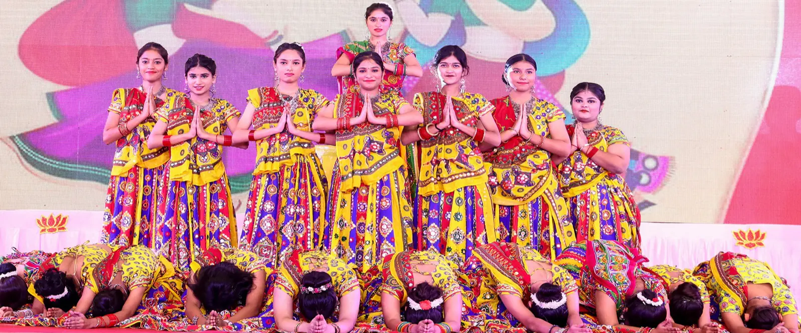
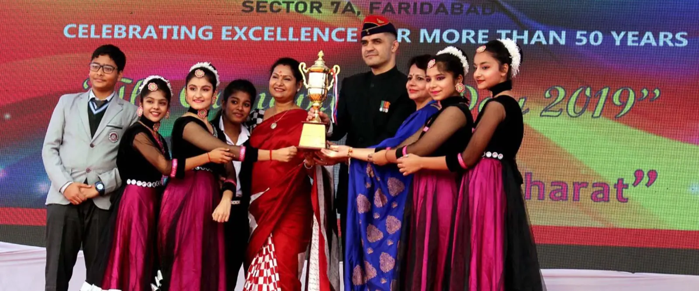

Choir and music
From devotional songs with live tabla and sitar to the full Annual Day choir, music is a big part of school life, all the way to carols at Christmas.
At St. John's, the day doesn't end at the last bell. Choir, band, dance from every state, sport and a stage that every child gets to stand on.

Every child takes part in something. Most take part in several.

From devotional songs with live tabla and sitar to the full Annual Day choir, music is a big part of school life, all the way to carols at Christmas.

Red berets, tartan waistcoats and drums. The band plays at assemblies, leads the march-past on Independence and Republic Day, and welcomes guests on prize days.

Garba from Gujarat, folk dances from the North-East, and more every year. Our celebrations of India's many cultures are how national integration is taught here.

Athletics, team games and Sports Day, and the Fit India movement for everyday fitness. Trophies won are shown off at the prize day.
Every student belongs to a house, competing in sport, debates and cultural events across the year. House names and colours: to be added.
Tap a photo to see it larger. The school office adds new albums from the same app teachers use.
A typical year, July to March.

Investiture ceremony
New prefects and house captains take their oath.Independence Day
The band leads the march past.Teachers' Day
Senior students run the classrooms for a day.Navratri and Dussehra
Garba before the autumn break.
Children's Day
The teachers perform for the children.Annual Day and Christmas
The choir, carols and a full hall.Republic Day
Folk dances from every corner of India.Sports Day
The houses compete on the main ground.
Results and prize day
Report cards, trophies and goodbyes.